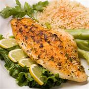
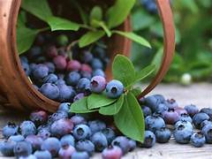

Find Food According to Your Health Condition
Best Burger Joint in Town
If you're a burger enthusiast, you must visit Burger Haven! Their juicy patties and delicious toppings will leave you craving for more.
Non-VegetarianTaco Tuesday at Tasty Tacos
Looking for a place to satisfy your taco cravings? Tasty Tacos offers a wide variety of tacos with fresh ingredients and flavorful sauces.
VegetarianAuthentic Italian Pizza
For the best Italian pizza experience, head over to Pizza Italia. Their thin crust pizzas topped with authentic Italian ingredients will transport you to Italy.
VegetarianWhiteFish Fillets
White fish is not a particular fish, but rather a whole category of fish. Cod, haddock, tilapia, and sea bass are some of the most common white fish..
 Non-VegetarianLeafy Vegetables
Green leafy vegetables are healthy foods that can help complete a balanced diet. They are typically rich in nutrients and fiber and low in calories and fat.
 Vegetarian
Vegetarian
Eggs
Eggs are a good source of protein and vitamins. They can be a healthy addition to a dietary plan, if a person eats them in moderation..
 Non-Vegetarian
Non-Vegetarian
Blue Berries
blueberries can benefit the body in many ways. Possible health benefits of blueberries include improving heart health, increasing bone strength, and lowering blood pressure.
 Vegetarian